잠시만 기다려 주세요
프로토타입 · 개발 중인 게임입니다
아이의 두 눈을 감쌌던 붕대. 끝이 두 번 접혀 매듭지어져 있다.
하진이 동생에게 가르쳐 준, 풀리지 않게 묶는 방법 그대로다.
의료지원프로젝트 · 변이 적응 치료 참가자 모집
늙지 않고, 병들지 않고, 굶지 않는 몸. 형태를 바꾸면 인간은 끝나지 않습니다.
구간 4 「멈춘 행렬」 끝
기억 조각 0 / 3
다음 · 엔딩 「바위 언덕」 (준비 중)
게임을 종료했어요. 이 창을 닫아도 돼요.